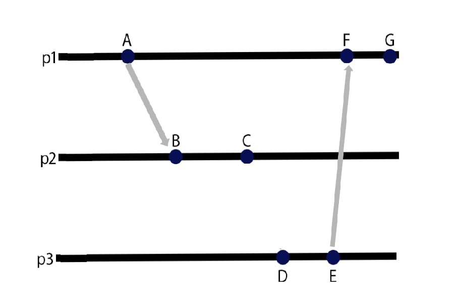

Xρονοσφραγίδες
Διανυσματικές Xρονοσφραγίδες
- Πριν από την εκτέλεση ενός συμβάντος η Pi εκτελεί VCi[ i ] ← VCi[ i ] + 1.
- Όταν η διεργασία Pi στέλνει ένα μήνυμα m στην Pj, θέτει την διανυσματική χρονοσφραγίδα vt(m) ίση με VCi (αφού έχει εκτελέσει το προηγούμενο βήμα)
- Όταν η διεργασία Pj λάβει το m προσαρμόζει το διάνυσμά της θέτοντας VCj [k] ← max{VCj[k], vt(m)[k]} για κάθε k.
Αρχικα τα περνουμε με την σειρα S1,S2,S3,A,B,C,D,E,F και G
Στο p0 είναι S1,A,F,G
Στο p1 είναι S2,B,C
Στο p2 είναι S3,D,F
ΞΕΡΟΥΜΕ
S1 (1,1,1)
S2 (0,2,2)
S3 (1,1,3)
Xρονοσφραγίδα A
A (2,1,1) ← Αυξάνουμε +1 την τιμή της 1ης θέσης του S1 (1,1,1) (S1[0] | P0)
Xρονοσφραγίδα B
B (2,3,2) ← Αυξάνουμε την τιμή της 2ης θέσης +1 (S[1] | P0) και βρίσκουμε το max της 1ης και 3ης θέσης του S2 (0,2,2) και A (2,1,1)
Xρονοσφραγίδα C
C (2,4,2) ← Αυξάνουμε την τιμή της 2ης θέσης +1 (B[1] | P1) του B (2,3,2)
Xρονοσφραγίδα D
D (2,4,4) ← Αυξάνουμε την τιμή της 3ης θέσης +1 (S3[2] | P) και βρίσκουμε της 1ης και 2ης θέσης το max του S3 (1,1,3) και C (2,4,4)
Xρονοσφραγίδα E
E (2,4,5) ← Αυξάνουμε +1 την τιμή της 3ης θέσης (D[2] | P2) του D (2,4,4)
Xρονοσφραγίδα F
F (3,4,5) ← Αυξάνουμε την τιμή της 1ης θέσης +1 (A[0] | P0) και βρίσκουμε το max της 2ης και 3ης θέσης του E (2,4,5) και A (2,1,1)
Xρονοσφραγίδα G
G (4,4,5) ← Αυξάνουμε +1 την τιμή της 1ης θέσης του F (3,4,5) (F[0] | P0)
Χρονοσφραγίδες Lamport
O Αλγόριθμος του Lamport
Κάθε διεργασία Pi διατηρεί μια τοπική μεταβλητή LTi (Logical Time) η οποία καλείται λογικό ρολόι και αποθηκεύει μη αρνητικούς ακέραιους
και έχει αρχική τιμή 0.
- Πριν από την εκτέλεση ενός γεγονότος η Pi εκτελεί
LTi ← Ti + 1 - Όταν η διεργασία Pi στέλνει μήνυμα m στην Pj, θέτει την χρονοσφραγίδα ts(m) (timestamp) του m ίση με LTi
- Όταν η διεργασία Pj λάβει το m προσαρμόζει το διάνυσμά της θέτοντας
LTj ← max{LTj , ts(m)}
Είναι πιθανό δύο συµβάντα A και D που πραγµατοποιούνται σε δύο διαφορετικές διεργασίες να µην συνδέονται µε την σχέση και να έχουν τις ίδιες χρονοσφραγίδες

Για να υπολογίσουμε το L περνούμε την max από το Α και B. Το Α είναι η διεργασία που στέλνει και το Β είναι η προηγουμένη διεργασία αρά L = max(A,B)
p1=0 p2=0 p3=0
A:1 => p1 + 1
B:2 => max(1,0)+1
C:3 => B+1
D:1 => p3 + 1
E:2 => D + 1
F:3 => max(2,1) + 1
E:4 => F + 1